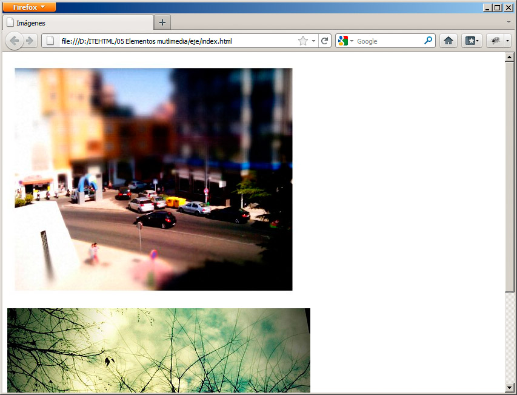
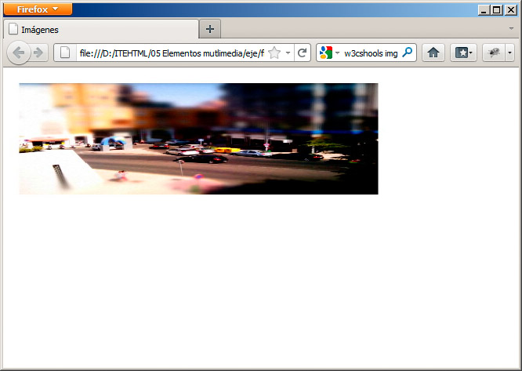
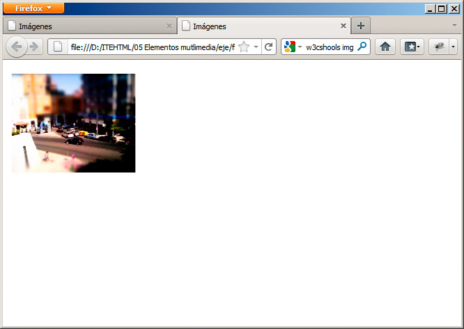
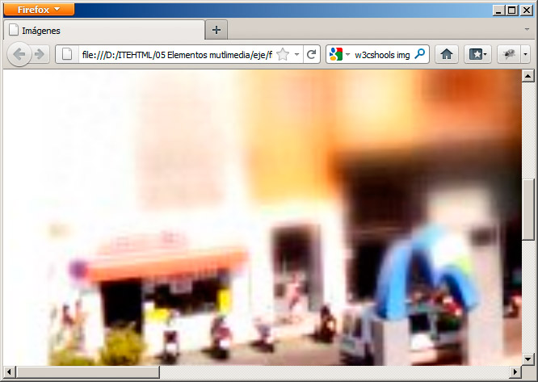

<img src="nombredelaimagen.png" />
Es un elemento que no tiene etiqueta de cierre, por lo que el cierre va incluido en la propia etiqueta.
Nota
La dirección de la imagen que indicaremos en src será normalmente una dirección relativa a la página principal, por lo que, antes de insertar una imagen, es muy importante guardar primero la página web, si estamos utilizando un editor, para evitar las temibles direcciones que comienzan por file:// y que fallarán al publicar la página en Internet.
Observemos estos otros ejemplos:
- <img src="recursos/calle.jpg" />: muestra una imagen que está contenida en una carpeta llamada imagenes. Es una dirección relativa.
- <img src="http://farm6.static.flickr.com/5178/5428759578_d6fb2288a4.jpg" />: Se muestra una imagen ubicada en una dirección de Internet, en este caso del portal Flickr. Es una dirección absoluta, que muestra una imagen que no está en nuestro ordenador ni en nuestro espacio web, sino directamente en Internet.
Esta última técnica (denominada hotlinking) entraña el riesgo de que, si el portal de donde tomamos el recurso opta por realizar algún cambio, puede que la imagen deje de mostrarse, pero puede ser un recurso interesante, si disponemos de poco espacio o limitaciones de ancho de banda.
Las dos imágenes anteriores se mostrarían tal y como se presenta en la figura.

Descripción de la imagen
Por cuestiones de accesibilidad, cada imagen debe acompañarse siempre de un texto que será mostrado en el caso de que, por cualquier motivo, la imagen no esté disponible y que sirve también como descripción en aplicaciones lectoras para personas con discapacidad.
El texto alternativo se inserta con el atributo alt. Así, un par de imágenes correctas quedarían de la siguiente manera:
<img src="recursos/calle.jpg" alt="Una calle con coches y tiendas" />
<img src="http://farm6.static.flickr.com/5178/5428759578_d6fb2288a4.jpg" alt="Árbol con ramas" />
Nota
Añadir texto alternativo a cada imagen puede parecer tedioso, pero es también muy necesario para que nuestras páginas sean accesibles a todo el mundo.
Modificar las dimensiones de la imagen
HTML incorpora dos atributos más a la etiqueta img: width (ancho) y height (alto); con ellos podemos indicar explícitamente la anchura y altura que tendrá una imagen.
Normalmente estos valores se emplean para establecer los valores reales de la imagen, lo que facilita el proceso de carga de la página, pero también se pueden emplear para que una imagen se muestre más pequeña, más grande o símplemente distorsionada en alguno de sus ejes.
Ambos atributos se acompañan de un valor entre comillas. Puede venir expresado en dos medidas diferentes:
- Píxeles: si el valor indicado no lleva ningún tipo o las letras px, estamos indicando que la medida es en píxeles. Por ejemplo <img src="foto.jpg" width="40px" /> o <img src="foto.jpg" width="40" />
- Porcentaje: el tamaño puede estar expresado en relación con su valor original, como un porcentaje. Lo indicamos con el signo %. Por ejemplo en <img src="foto.jpg" width="50%" /> la imagen tendría la mitad de su tamaño original.
Siguiendo con el ejemplo anterior, nuestra primera imagen completa con su dimensión real quedaría así:
<img alt="Calle con coches y tiendas" src="recursos/calle.jpg" width="483px" height="387px" />
La figura nos muestra el resultado que obtenemos, si modificamos sólo uno de los valores:
<img alt="Calle con coches y tiendas" src="recursos/calle.jpg" width="483px" height="150px" />

La modificación de un valor, mientras mantenemos el otro igual, produce ese tipo de deformaciones. Para evitarlo, intentaremos mantener la proporción o, lo que es más sencillo, indicar sólo la anchura o la altura y así el navegador se encargará de calcular el valor que no especificamos. Observa la diferencia con este otro ejemplo:
<img alt="Calle con coches y tiendas" src="recursos/calle.jpg" height="150px" />

El navegador ha calculado la anchura necesaria para mostrar la imagen con esa altura. Como decíamos, también podemos hacer la operación con porcentajes. Veamos cómo se muestra la imagen si la ampliamos un 300 %:
<img alt="Calle con coches y tiendas" src="recursos/calle.jpg" width="300%" height="300%" />

Se ve lo suficientemente grande como para que no quepa entera en la pantalla y, además, nos deja con el otro gran problema de manipular las dimensiones con este método: la presentación de la imagen se deja en manos del navegador, que no siempre hace un trabajo tan bueno como el que podríamos obtener con un programa de retoque fotográfico. Por ello, siempre que sea posible, evitaremos ajustar las dimensiones de una imagen utilizando width y height, especialmente si hay grandes diferencias entre el tamaño de la imagen y el espacio que va a ocupar.
Nota
El problema del tamaño también es importante. Con width y height podemos tomar una fotografía de 3000 píxeles de ancho y ajustarla en un espacio de 80 píxeles, por ejemplo. El inconveniente es que esa imagen ocupa el mismo tamaño si la mostramos con 3000 que con 80, por lo que, al enviarse al navegador de nuestros visitantes, tardará bastante más tiempo en transferirse del que debería.
Pregunta de Elección Múltiple
|
<img src="nombredelaimagen.png" />.
| |
|
<img src="nombredelaimagen.png".
| |
|
<img src/>="nombredelaimagen.png".
|
Pregunta Verdadero-Falso
Verdadero Falso